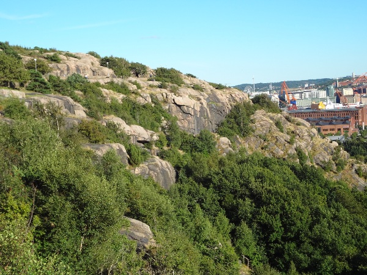
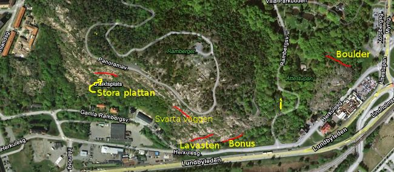

GPS: 57.71407,11.9325
Ramberget ligger rätt så nära stan, men har ett dåligt rykte bland lokala klättrare. Trad, nyturer och bouldering erbjuds.
Ramberget har kort anmarsch ifrån bilen. Dock är berget stort och att ta sig mellan de olika delarna kan kräva att man flyttar bilen.
Vägbeskrivningen i den första utgåvan av Göteborgsföraren är felaktig. Klippan ligger mer västerut än vad som anges. Klippan ligger precis nedanför parkeringen.
Parkeringen är den som är på toppen av Ramberget. Vägarna mest söder ut är slutet av Herkulesgatan samt Gamla Rambergsvägen. Moskén ligger mer österut om man följer Herkulesgatan.
Närmsta hållplats är "Ramberget", buss 31 ifrån Wieselgrensplatsen. Ramberget, mitt i Hisingen, erbjuder urban klättring. Ganska roligt.
Lederna ligger rakt nedanför parkeringen
På grund av Lundbyleden som går nedanför berget är det omöjligt att höra vad din replagskamrat säger vid denna sektion. Det finns fler tänkta linjer här om nytursmakaren är intresserad.
Kategori:Göteborg
Copyright (C) Permission is granted to copy, distribute and/or modify this document under the terms of the GNU Free Documentation License, Version 1.3